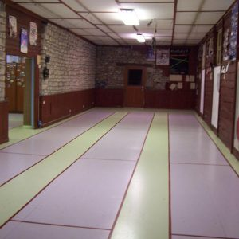

What is it?
 Fencing is a combat sport. It is the art of hitting an opponent with the point or edge (thrust and cut) of a white weapon on the valid parts without being hit.
Three types of weapons are used: epee (Olympic discipline since 1900 for men and 1996 for women), sabre (Olympic discipline since 1896 for men and 2004 for women) and foil (Olympic discipline since 1896 for men and 1924 for women). All three weapons are gendered: men's and women's epee, men's and women's foil and men's and women's sabre. The events are individual or by team. There are therefore twelve events.
Fencing is one of the sports where French is the official language: each country uses its own language for national competitions, but French is compulsory for refereeing in international competitions ("En garde!", "Prêts?", "Allez!", "Halte!") The referee has, in addition, a code of signs to explain each weapon phrase.
Fencing is a combat sport. It is the art of hitting an opponent with the point or edge (thrust and cut) of a white weapon on the valid parts without being hit.
Three types of weapons are used: epee (Olympic discipline since 1900 for men and 1996 for women), sabre (Olympic discipline since 1896 for men and 2004 for women) and foil (Olympic discipline since 1896 for men and 1924 for women). All three weapons are gendered: men's and women's epee, men's and women's foil and men's and women's sabre. The events are individual or by team. There are therefore twelve events.
Fencing is one of the sports where French is the official language: each country uses its own language for national competitions, but French is compulsory for refereeing in international competitions ("En garde!", "Prêts?", "Allez!", "Halte!") The referee has, in addition, a code of signs to explain each weapon phrase.
the different blades

the foil: The foil was created in the seventeenth century as a training and study weapon. It is the only weapon that never left the fencing halls (unlike the sabre which was used on the battlefield and the epee which was used for duelling). It is a light weapon - 500 grams for a length of 110 cm - and flexible with a rectangular blade section. The touch is made with the point only, the valid surface is only the torso.
.
The sword: The modern sword was invented in the nineteenth century in order to fight a duel. It is a thrusting weapon only. Previously, from the 16th century onwards, the rapier was used, which later evolved into a court sword under Louis XIV. The offensive action of this weapon is therefore exerted by the point and by the point alone. It is a heavier weapon - 750 g for a maximum length of 110 cm (handle of a maximum length of 20 cm) - and less flexible than the foil, and its blade is of triangular section. The valid surface includes the fencer's entire body, including clothing and equipment.
Le sabre : Le sabre est une arme d'estoc, de taille9 (coup porté avec le tranchant de la lame) et de contre-taille (coup porté avec le dos de la lame) ; les coups du plat de la lame sont aussi valables. C'est une arme conventionnelle comme le fleuret9 : le sabre répond aux mêmes règles d'engagement (conventions) que le fleuret, donnant la priorité à l'attaquant, et de même légèreté — 500 g pour une longueur totale de 105 cm maximum10. En cas de touches simultanées, l'arbitre décide d'accorder la priorité à un des tireurs, ou à aucun des deux. Cette priorité dépend de la « phrase d'armes » et des conventions du sabre. The valid area for sabre is everything above the waist (except for the two hands).
What about me?
I have been fencing for 9 years, mostly sabre and a little epee in the club La Boyarde a lever. I have done competition for 5 years but I stopped it because I had no interest in not falling against new people and because it was always far away (my last two were in Montargis and Limoges), ah the fencing we have mainly two phases, I'm not sure if it's a good idea to go to the next level or not, but I'm sure it's a good idea to go to the next level.